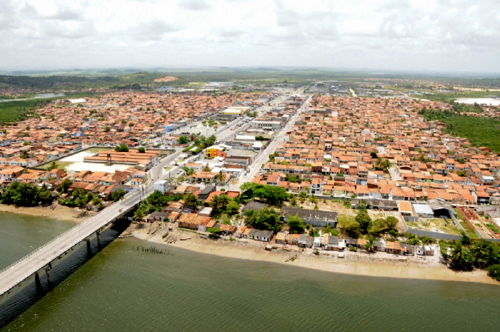

Nossa Senhora do Socorro
História
A histografia sergipana nos mostra que o território de Sergipe era habitado por diversas tribos indígenas. Mott (1986) registra a presença de brancos, pardos, negros e índios na etnia sergipana, no século XVIII. Ressalta-se que cada um desses grupos tem suas peculiaridades culturais e contribuíram para a formação histórica da população dos diversos municípios sergipanos. Segundo indicações de Góis (1991), o espaço geográfico em que hoje se situam alguns municípios que faziam parte da micro-região da Cotinguiba (atual Litoral Sul), no século XVI, era habitado por índios da tribo tupinambá.
Provavelmente a ocupação de Nossa Senhora do Socorro tenha ocorrido por volta do mesmo século, período em que se iniciou a colonização das terras da capitania de Sergipe Del Rey e fase em que a Coroa Portuguesa determinou o avanço da colonização sobre a capitania de Sergipe, em 1575 (OLIVA: 1991). Por outro lado, registra-se que, no ano de 1829, época em que Nossa Senhora do Socorro já era freguesia, ainda havia aldeias indígenas nessas mesmas localidades (MOTT. 1986).
O espaço geográfico que hoje compreende a cidade de Nossa Senhora do Socorro, desde os primórdios de sua povoação, passou por mudanças de caráter religioso e jurídico similares às diversas cidades brasileiras. Neste sentido, a elevação do referido município às categorias de freguesia, vila e cidade, obedeceram a interesses jurídicos e de ordem religiosa.
No século XVIII, a cidade formava um núcleo demográfico de aproximadamente três mil habitantes, tendo por atividade econômica a plantação de mandioca e cana-de-açúcar. Esse núcleo foi elevado à categoria de freguesia em 1718, por decisão do Arcebispo da Bahia Dom Sebastião Monteiro da Vide, passando a ser denominada Nossa Senhora do Socorro da Cotinguiba, e pertencendo, nesse período, à vila de Santo Amaro das Brotas.
A probabilidade de um crescimento demográfico da freguesia e a falta de uma capela impossibilitava o pároco de realizar um atendimento regular e eficiente aos fieis, impedindo-o de exercer suas atividades eclesiásticas na freguesia de origem e obrigando-o a se deslocar para outras localidades.
fonte: https://cidades.ibge.gov.br/brasil/se/nossa-senhora-do-socorro/historicoPontos Turísticos
Prainha do Porto Grande
Em 1992 foi construída a orla do Porto Grande, com oito bares, que foram dotados de toda estrutura necessária. Nos bares que trazem nomes de peixes e mariscos, que hoje é um pontos de atração turística do município. É lá onde também acontecem os festejos carnavalescos. A prainha do Porto Grande e a orlinha do São Braz formam o maior complexo de lazer de Nossa Senhora do Socorro, e ficam localizados à beira do rio.
Orlinha do São Braz
Localizada às margens do Rio do Sal, no Povoado São Braz, o local virou atração turística depois que foi todo urbanizado e ganhou uma passarela em madeira com uma bela vista para o rio e manguezal que atravessa a região. O espaço de lazer oferece conforto aos moradores e estimula o comércio local, melhorando a qualidade de vida de moradores do local e do complexo Taiçoca.
Dados Gerais de acordo com o IBGE
| Prefeito (a) | Inaldo Luís da Silva |
| Vice-Prefeito (a) | Manoel do Prado Franco Neto |
| Site do município | https://socorro.se.gov.br/prefeitura/ |
| Área territorial | 155,018 km² |
| População estimada | 187.733 pessoas |
| Densidade demográfica | 1.025,87 hab/km² |
| IDHM | 0,664 |
| PIB per capita | R$ 14.906,47 |